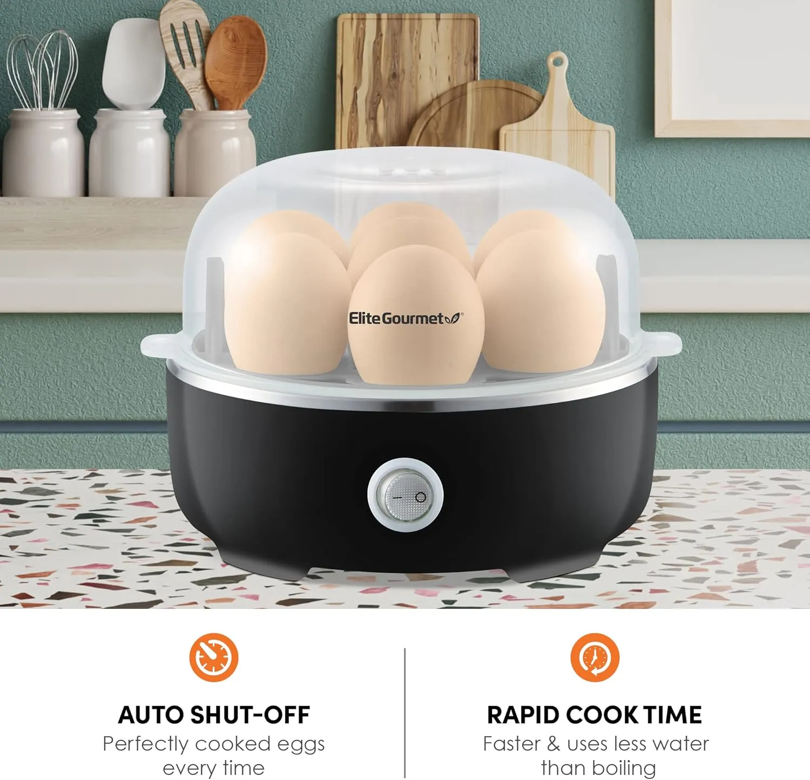
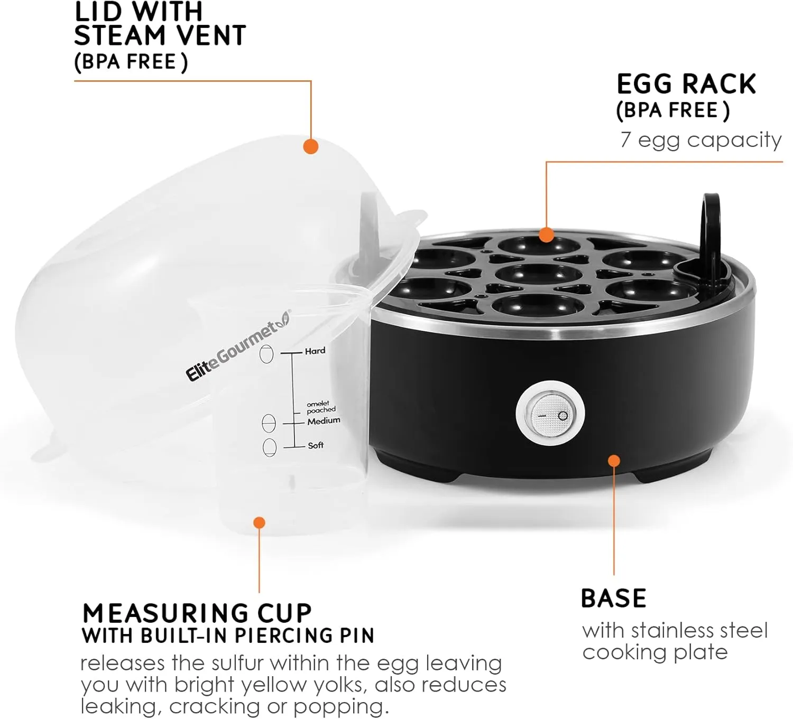
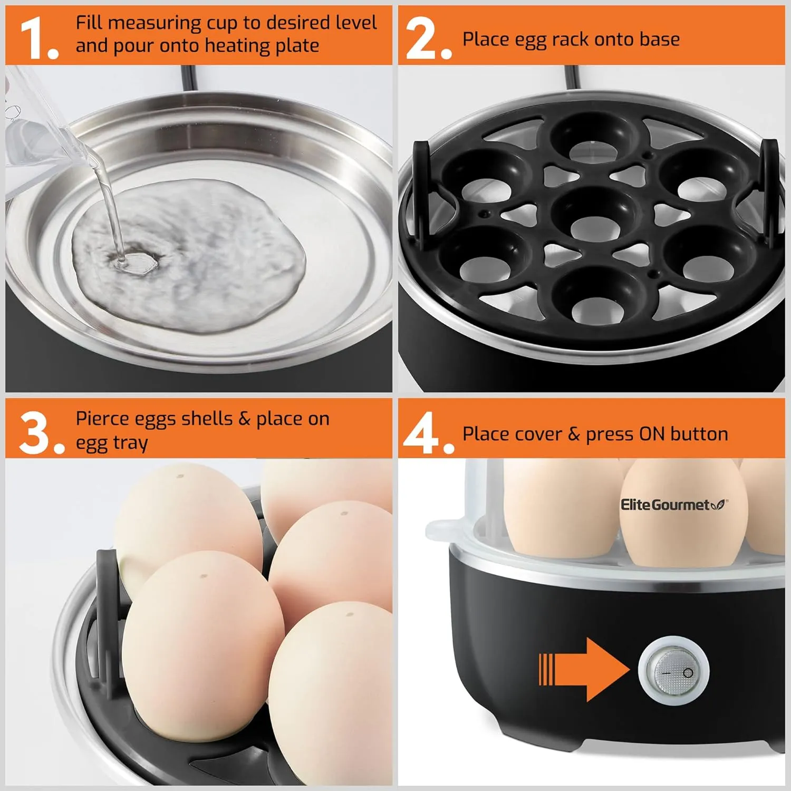
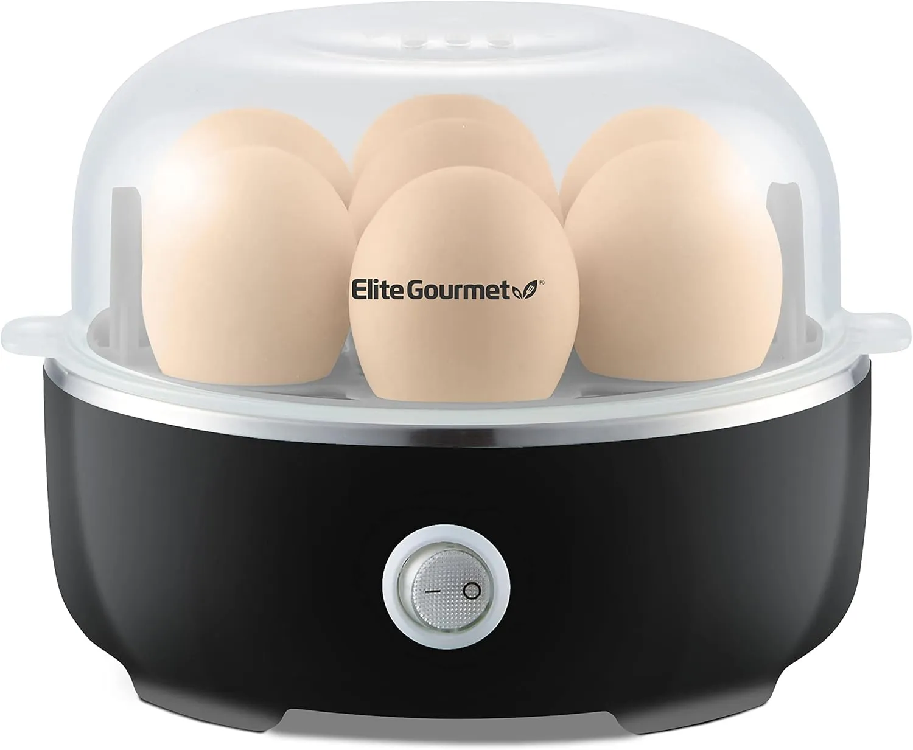

The problem: boiling eggs is simple until it is not
Too soft, too chalky, cracked shells, forgotten timers. Eggs are easy food with surprisingly annoying timing.
This cooker keeps the process contained: measure water, load the rack, press the button, and let the cooker handle the breakfast routine.

Before and after
You watch a pot, guess the timing, cool the eggs, and hope the texture is right.
You use a compact cooker with measured water and a repeatable process for breakfast prep.
Why it works
The value is consistency. It turns a stove task into a repeatable countertop routine.
7 egg capacity
Cook enough eggs for meal prep, snacks, salads, or a small family breakfast.
Auto shut-off
The product image highlights auto shut-off, which helps reduce babysitting.
Uses measured water
The included measuring cup helps match the water level to the result you want.
Compact design
Small enough for many counters, apartments, dorms, and quick breakfast setups.

Compact enough for real kitchens
It does not need to dominate the counter. The product images show a small footprint designed for easy storage.

Know before you buy
This is a plug-in countertop appliance. Check the live Amazon listing for exact model, wattage, cleaning instructions, included accessories, and capacity.
- Fill the measuring cup to the desired level.
- Pour water onto the heating plate.
- Place eggs on the rack and cover with the lid.
- Press the button and follow the manual for doneness and cooling.

Who it is for, and who should skip it
Meal prep, quick breakfasts, small kitchens, dorms, office kitchens, salad prep, and anyone who eats eggs often.
You rarely eat eggs, do not want another plug-in appliance, or prefer cooking everything on the stovetop.

Bottom line: buy it for easier breakfast repeatability
The Elite Gourmet Electric Egg Cooker is not trying to be fancy. It is trying to make eggs less annoying.
If the current Amazon price and model details fit your kitchen, this is a practical breakfast upgrade.
Quick questions
How many eggs does it cook?
The product images show a 7 egg capacity.
Does it replace boiling water?
It gives you a countertop method for cooking eggs with measured water and an egg rack instead of a stovetop pot.
What should I verify first?
Verify exact model, accessories, cleaning guidance, capacity, power details, and current price on Amazon.